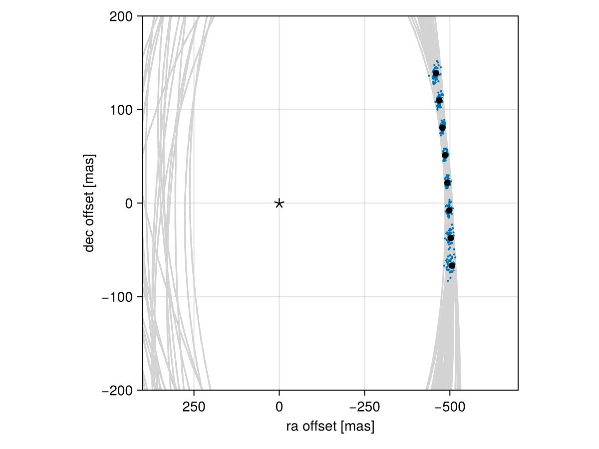

Posterior Predictive Checks
A posterior predictive check compares our true data with simulated data drawn from the posterior. This allows us to evaluate if the model is able to reproduce our observations appropriately. Samples drawn from the posterior predictive distribution should match the locations of the original data.
To demonstrate, we will fit a model to relative astrometry data:
using Octofitter
using Distributions
astrom_like = PlanetRelAstromLikelihood(Table(;
epoch= [50000,50120,50240,50360,50480,50600,50720,50840,],
ra = [-505.764,-502.57,-498.209,-492.678,-485.977,-478.11,-469.08,-458.896,],
dec = [-66.9298,-37.4722,-7.92755,21.6356, 51.1472, 80.5359, 109.729, 138.651,],
σ_ra = fill(10.0, 8),
σ_dec = fill(10.0, 8),
cor = fill(0.0, 8)
))
@planet b Visual{KepOrbit} begin
a ~ truncated(Normal(10, 4), lower=0.1, upper=100)
e ~ Uniform(0.0, 0.5)
i ~ Sine()
ω ~ UniformCircular()
Ω ~ UniformCircular()
θ ~ UniformCircular()
tp = θ_at_epoch_to_tperi(system,b,50420) # reference epoch for θ. Choose an MJD date near your data.
end astrom_like
@system Tutoria begin
M ~ truncated(Normal(1.2, 0.1), lower=0.1)
plx ~ truncated(Normal(50.0, 0.02), lower=0.1)
end b
model = Octofitter.LogDensityModel(Tutoria)
using Random
Random.seed!(0)
chain = octofit(model)Chains MCMC chain (1000×28×1 Array{Float64, 3}):
Iterations = 1:1:1000
Number of chains = 1
Samples per chain = 1000
Wall duration = 3.94 seconds
Compute duration = 3.94 seconds
parameters = M, plx, b_a, b_e, b_i, b_ωy, b_ωx, b_Ωy, b_Ωx, b_θy, b_θx, b_ω, b_Ω, b_θ, b_tp
internals = n_steps, is_accept, acceptance_rate, hamiltonian_energy, hamiltonian_energy_error, max_hamiltonian_energy_error, tree_depth, numerical_error, step_size, nom_step_size, is_adapt, loglike, logpost, tree_depth, numerical_error
Summary Statistics
parameters mean std mcse ess_bulk ess_tail r ⋯
Symbol Float64 Float64 Float64 Float64 Float64 Floa ⋯
M 1.1871 0.0978 0.0036 718.9438 564.3417 1.0 ⋯
plx 49.9997 0.0201 0.0006 1058.9192 625.3696 1.0 ⋯
b_a 11.6143 2.2042 0.1549 179.9616 398.7443 1.0 ⋯
b_e 0.1543 0.1082 0.0059 336.5937 493.2944 1.0 ⋯
b_i 0.6268 0.1682 0.0139 178.9144 103.9379 1.0 ⋯
b_ωy 0.0838 0.7343 0.0620 162.9669 409.2113 1.0 ⋯
b_ωx 0.0429 0.6793 0.0625 128.4326 610.6610 1.0 ⋯
b_Ωy 0.1202 0.7406 0.1202 44.7823 190.3043 1.0 ⋯
b_Ωx 0.0875 0.6656 0.0831 78.2256 404.5583 1.0 ⋯
b_θy 0.0745 0.0106 0.0004 679.5740 454.4843 1.0 ⋯
b_θx -1.0036 0.1029 0.0046 544.3173 347.7362 1.0 ⋯
b_ω -0.0867 1.7443 0.1414 190.7256 418.4065 1.0 ⋯
b_Ω -0.2835 1.6775 0.2034 94.5770 148.8658 1.0 ⋯
b_θ -1.4967 0.0073 0.0002 915.4192 590.2086 0.9 ⋯
b_tp 43110.4586 4767.0607 294.9936 265.0726 427.5894 1.0 ⋯
2 columns omitted
Quantiles
parameters 2.5% 25.0% 50.0% 75.0% 97.5%
Symbol Float64 Float64 Float64 Float64 Float64
M 0.9919 1.1206 1.1892 1.2533 1.3800
plx 49.9602 49.9867 49.9997 50.0134 50.0365
b_a 8.0846 10.0464 11.2510 12.9641 16.5752
b_e 0.0054 0.0662 0.1362 0.2232 0.3888
b_i 0.2157 0.5329 0.6447 0.7393 0.9000
b_ωy -1.0718 -0.6875 0.2397 0.7854 1.0506
b_ωx -1.0494 -0.6003 0.0796 0.6606 1.0584
b_Ωy -1.0747 -0.6463 0.2948 0.8220 1.0890
b_Ωx -1.0364 -0.5010 0.1958 0.6752 1.0594
b_θy 0.0567 0.0672 0.0740 0.0811 0.0984
b_θx -1.2254 -1.0641 -0.9938 -0.9336 -0.8263
b_ω -2.9734 -1.6554 0.1798 1.1039 2.9805
b_Ω -2.9883 -2.0393 0.2586 0.9339 2.6961
b_θ -1.5111 -1.5017 -1.4967 -1.4916 -1.4831
b_tp 31593.6569 40323.6841 44144.9137 46462.5466 49902.3729
We now have our posterior as approximated by the MCMC chain. Convert these posterior samples into orbit objects:
# Instead of creating orbit objects for all rows in the chain, just pick
# every twentieth row.
ii = 1:20:1000
orbits = Octofitter.construct_elements(chain, :b, ii)50-element Vector{Visual{KepOrbit{Float64}, Float64}}:
Visual{KepOrbit{Float64}, Float64}(KepOrbit(13.8, 0.193, 0.782, 0.212, 0.000188, 37100.0, 1.23), 49.9803811474009, 4.1269193084320105e6)
Visual{KepOrbit{Float64}, Float64}(KepOrbit(10.0, 0.0428, 0.637, 1.01, 1.12, 45600.0, 1.1), 50.00865497738722, 4.1245860360225313e6)
Visual{KepOrbit{Float64}, Float64}(KepOrbit(12.0, 0.0267, 0.697, 1.91, 0.539, 44700.0, 1.03), 49.97236915315794, 4.1275809711528425e6)
Visual{KepOrbit{Float64}, Float64}(KepOrbit(14.8, 0.112, 0.818, -0.156, 0.00446, 34900.0, 1.2), 49.98477919597783, 4.126556190061108e6)
Visual{KepOrbit{Float64}, Float64}(KepOrbit(11.2, 0.11, 0.726, 2.14, 0.927, 47300.0, 1.33), 49.99309229079056, 4.125870006204777e6)
Visual{KepOrbit{Float64}, Float64}(KepOrbit(8.72, 0.203, 0.579, 0.863, 1.17, 46800.0, 1.25), 49.96832476959541, 4.1279150532080187e6)
Visual{KepOrbit{Float64}, Float64}(KepOrbit(18.9, 0.126, 0.962, 0.882, 3.5, 48800.0, 1.38), 50.01938850292997, 4.123700952240104e6)
Visual{KepOrbit{Float64}, Float64}(KepOrbit(9.64, 0.0405, 0.509, 2.73, 4.52, 44000.0, 1.14), 49.99492938579178, 4.1257183985266136e6)
Visual{KepOrbit{Float64}, Float64}(KepOrbit(10.6, 0.289, 0.744, -1.8, 1.92, 41100.0, 1.26), 49.99256556365138, 4.125913476822467e6)
Visual{KepOrbit{Float64}, Float64}(KepOrbit(18.9, 0.144, 0.949, -1.51, 0.363, 24500.0, 1.26), 49.97888578085876, 4.1270427857156573e6)
⋮
Visual{KepOrbit{Float64}, Float64}(KepOrbit(13.9, 0.271, 0.637, -0.015, 4.24, 49300.0, 1.12), 49.97168658603962, 4.127637350099434e6)
Visual{KepOrbit{Float64}, Float64}(KepOrbit(9.45, 0.183, 0.551, -1.82, 3.77, 46200.0, 1.27), 49.99066093543609, 4.1260706728081726e6)
Visual{KepOrbit{Float64}, Float64}(KepOrbit(12.6, 0.148, 0.8, -2.65, 3.53, 39800.0, 1.09), 49.9884677224645, 4.126251701596083e6)
Visual{KepOrbit{Float64}, Float64}(KepOrbit(10.5, 0.205, 0.603, -2.18, 2.94, 42600.0, 1.19), 49.9964831977271, 4.1255901776982797e6)
Visual{KepOrbit{Float64}, Float64}(KepOrbit(12.9, 0.239, 0.845, 2.4, 0.8, 47500.0, 1.39), 50.01024691817358, 4.124454740995168e6)
Visual{KepOrbit{Float64}, Float64}(KepOrbit(11.0, 0.218, 0.715, 0.898, 0.306, 43100.0, 1.26), 50.00414467273752, 4.124958067975045e6)
Visual{KepOrbit{Float64}, Float64}(KepOrbit(13.6, 0.00691, 0.812, -0.556, 3.64, 45700.0, 1.27), 49.996602068255456, 4.125580368809997e6)
Visual{KepOrbit{Float64}, Float64}(KepOrbit(14.8, 0.0736, 0.829, -1.39, 0.489, 31500.0, 1.06), 49.985348344135815, 4.1265092038555057e6)
Visual{KepOrbit{Float64}, Float64}(KepOrbit(9.05, 0.0834, 0.515, 0.381, 1.38, 45900.0, 1.12), 49.989065913670494, 4.126202325048702e6)Calculate and plot the location the planet would be at each observation epoch:
using CairoMakie
epochs = astrom_like.table.epoch' # transpose
x = raoff.(orbits, epochs)[:]
y = decoff.(orbits, epochs)[:]
fig = Figure()
ax = Axis(
fig[1,1], xlabel="ra offset [mas]", ylabel="dec offset [mas]",
xreversed=true,
aspect=1
)
for orbit in orbits
Makie.lines!(ax, orbit, color=:lightgrey)
end
Makie.scatter!(
ax,
x, y,
markersize=3,
)
fig
Makie.scatter!(ax, astrom_like.table.ra, astrom_like.table.dec,color=:black, label="observed")
Makie.scatter!(ax, [0],[0], marker='⋆', color=:black, markersize=20,label="")
Makie.xlims!(400,-700)
Makie.ylims!(-200,200)
fig
Looks like a great match to the data! Notice how the uncertainty around the middle point is lower than the ends. That's because the orbit's posterior location at that epoch is also constrained by the surrounding data points. We can know the location of the planet in hindsight better than we could measure it!
You can follow this same procedure for any kind of data modelled with Octofitter.